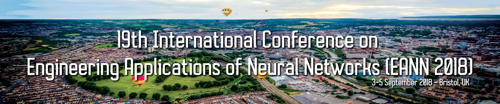
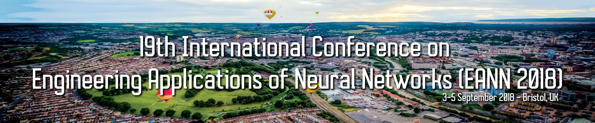
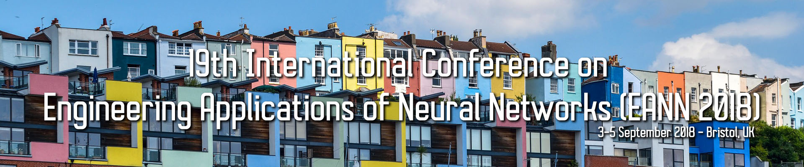
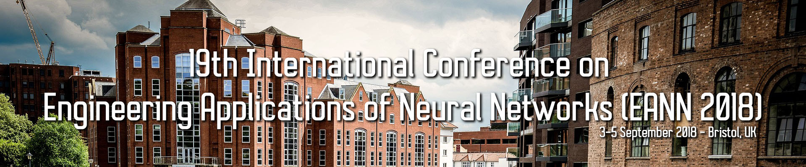
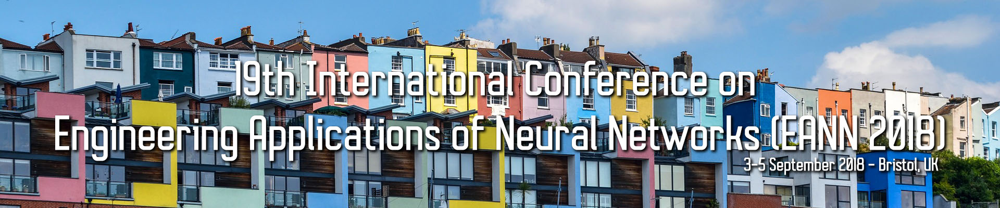
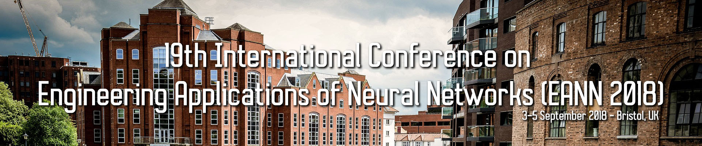

 




Special Issues
Selected papers from those accepted at the EANN 2018 Conference will be considered for inclusion and publication in a volume of the
“Advanced Computational Intelligence Paradigms in Healthcare"
SPRINGER BOOK SERIES
http://www.springer.com/gp/book/9783540475231Edited by Professor Ilias Maglogiannis, University of Piraeus, Greece
NEW - The Springer Journal on Neural Computing and Applications (NCA) will edit a Special Issue with selected papers from the EANN 2018 conference.

Past Special Issues
- Special issue on: An Interdisciplinary Journal for Advanced Science and Technology, Evolving Systems,
Vol. 8, No. 32, Eds: Plamen Angelov, Dimitar P. Filev, Nikola K. Kasabov (2017) - Special issue on: Computing and Applications, Evolving Systems,
Vol. 28, No. 155, Eds: John MacIntyre (2017) - Special issue on: Timely advances in evolving neural-based systems, Evolving Systems,
Vol. 8, No. 1, Eds: Lazaros Iliadis, Konstantinos Margaritis, Ilias Maglogiannis (2017) - Special issue on: 15th Engineering applications of neural networks,
Neural computing and Applications Springer July 2016, Vol. 27, No. 5, Eds: Chrisina Jayne, Lazaros Iliadis, Valeri Mladenov (2016) - Special issue on: 16th Engineering applications of neural networks,
Neural Computing and Applications, Eds: Lazaros Iliadis, Chrisina Jayne (2016) - Special issue on: Timely Neural Networks Applications in Engineering Selected Papers from the 12th EANN International Conference,
Neurocomputing, Vol. 107, pp 1-107, Eds: Lazaros Iliadis Dominic Palmer Brown (2013) - Special issue on: Intelligent Systems Applications for Quality of life IS,
International Journal of Artificial Intelligence, Vol. 9, No. A12, Eds: Kostas Karatzas, Mihaela Oprea, Lazaros Iliadis (2012) - Special issue on: Timely developments in applied neural computing,
Neurocomputing, Vol. 73, No. 1-3, pp 1-2, Eds: Dominic Palmer Brown, Lazaros Iliadis (2009) - Special issue on: Industrial Applications of Neural Network,
Information Sciences Intelligent Systems Elsevier, Vol. 178, No. 20, pp. 3799–3801, Eds: Lazaros Iliadis, (2008)